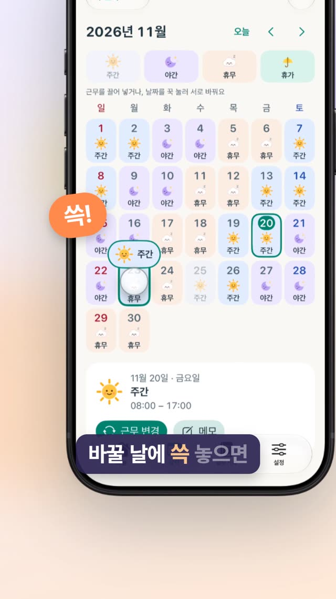
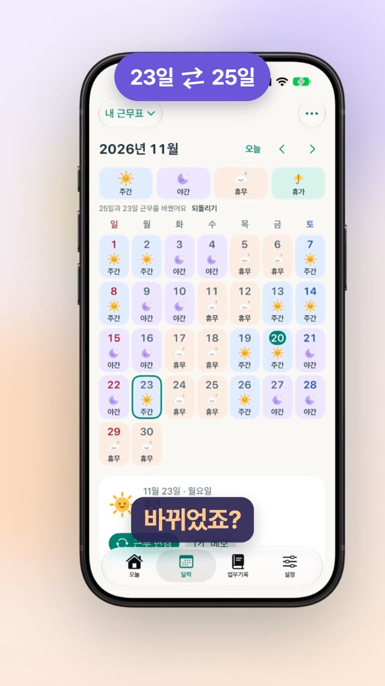

근무가 바뀐 날, 꾹 눌러 끌어서 바꾸기
동료와 근무를 바꾸기로 하면 근무표도 고쳐야 합니다. 교대하루에서는 두 날의 근무를 끌어서 맞바꿀 수 있습니다.
사용법
1. 바꿀 날을 길게 누르기
달력에서 근무를 바꿀 날짜를 꾹 누릅니다.

2. 바꿀 날로 끌어 놓기
누른 채로 맞바꿀 날짜까지 끌어서 놓습니다. 두 날의 근무가 서로 바뀝니다.

3. 되돌리기
잘못 놓았다면 되돌리기를 한 번 누르면 원래대로 돌아갑니다.
화면은 시뮬레이터에서 실제 앱을 조작해 녹화한 것입니다. 손가락 표시는 누른 위치를 보여 주는 그래픽입니다.